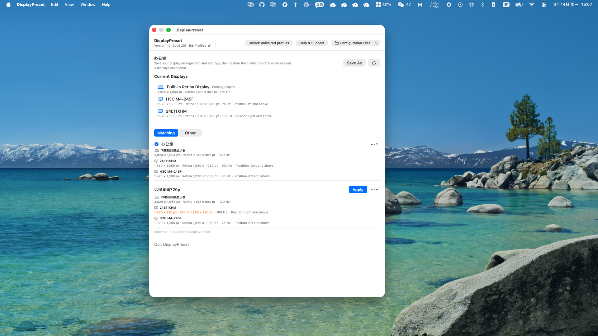

▣
Display profiles
Save a named configuration for the displays connected to your Mac and restore it whenever you need it.
DisplayPreset saves connected display configurations so you can restore the setup you need in one click.
Designed for local-first use. DisplayPreset only manages display profiles.
Save a named configuration for the displays connected to your Mac and restore it whenever you need it.
Profiles use the display information available to macOS, so reconnecting the same displays is simple and predictable.
Your profiles stay on your Mac. Import and export JSON files when you want a portable backup.

$0
Save and use one display profile.
$1.99
One-time purchase for any number of display profiles. Final price is shown by the App Store.